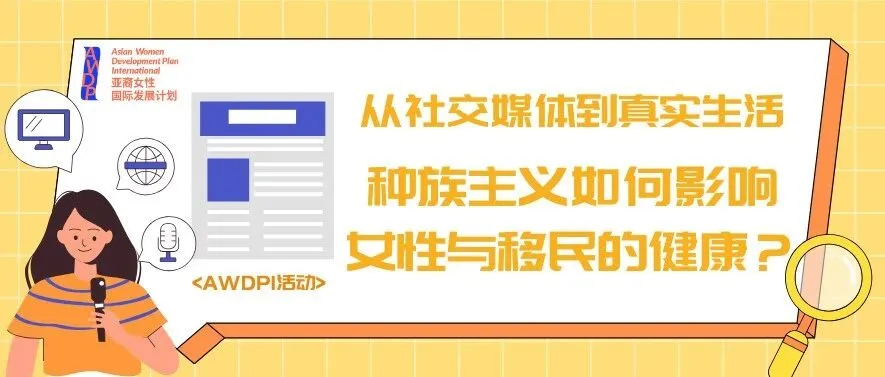

在数字化时代，社交媒体不仅记录情绪与观点，更折射社会结构性不平等的深层逻辑。当种族偏见在网络空间扩散，它是否会对真实世界中的健康产生可测量的影响？尤其是对女性与移民而言，这一问题更具迫切性。
01
嘉宾信息
主讲人：Professor Thu T. Xuan Nguyen
马里兰大学帕克分校（University of Maryland, College Park）公共卫生学院副教授
02
讲座信息
本次讲座将聚焦“利用社交媒体与混合研究方法，探索种族主义及其关联的仇恨犯罪对女性与移民健康的影响”，以三项代表性研究为线索，呈现从大数据分析到深度访谈的证据，揭示种族主义如何渗入生活的关键环节。
讲座时间
2025年12月13日 21:00（北京时间）
地点
线上Zoom会议/AWDPI微信视频号转播
Zoom会议链接
扫描上方二维码
或者点击文章结尾“阅读原文”
即可进入会议
会议号: 920 9489 6042
密码: 20251213
（中国大陆区用户使用Zoom会议，可直接以游客身份进入app，保持不登录的状态，即可顺利加入会议）
视频号链接
语言
英文主讲
扫码进入倡导与影响力部活动总群，获得会议链接和更多AWDPI活动资讯
若二维码过期可在公众号后台留言或添加小助手: Avoice-WomenAid加入群聊
当种族主义以数字痕迹的方式存在，它究竟如何转化为真实而深刻的健康不平等？
撰稿｜ 高广禄，周欣愉
排版&封面｜池一诺